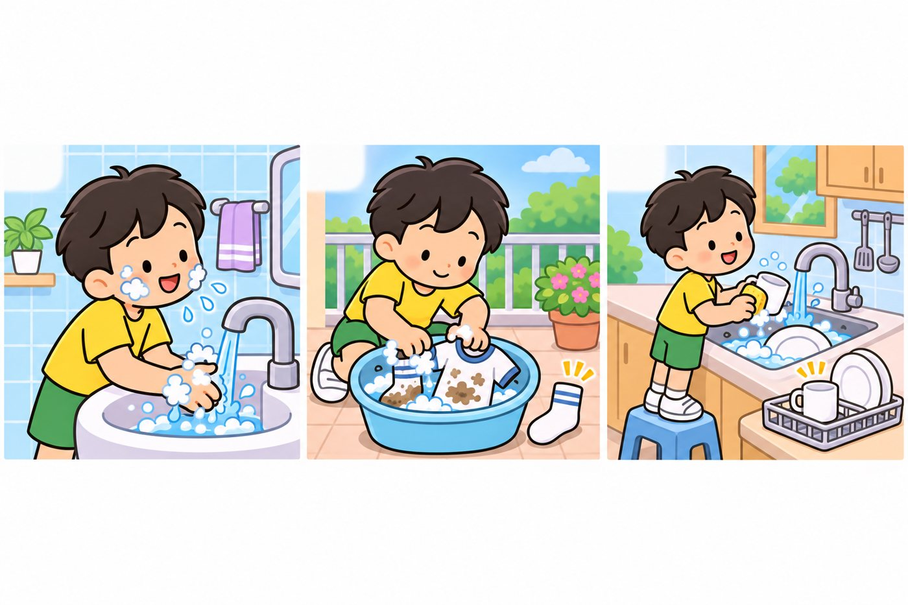

PART 1 · 아침부터 저녁까지오른쪽 쪽은 가리고 먼저 해 봐요.
A이 문장, 무슨 뜻?
저녁을 먹고 나서 엄마가 나에게 이렇게 물으셨어요.
Can you wash the dishes tonight?
여기서 wash는 무슨 뜻일까요?
B내가 아는 뜻아는 뜻을 모두 써요
wash =
아래 단어는 wash와 뜻이 비슷할까요, 반대일까요? 괄호에 유(유의어 = 뜻이 비슷한 말) 또는 반(반의어 = 뜻이 반대인 말)을 써요.
clean()dirty()
C빈칸 채우기빈칸에 wash를 알맞은 모양으로 써요
washwasheswashedwashing
- 1나는 밥 먹기 전에 손을 씻는다.I my hands before meals.
- 2엄마는 어제 내 운동화를 빨아 주셨다.Mom my sneakers yesterday.
- 3아빠가 차를 닦고 계신다.Dad is the car.
도움말‘~했다’는 washed, ‘~하고 있다’는 is washing, 한 사람(he · she · Mom)이 늘 하는 일은 washes.
④ 강의READING을 마친 뒤 강의를 보고, 이 쪽을 해설(p.2)로 채점한 뒤 틀린 것만 다시 써요.
강의 보기
핵심 그림wash물로 더러운 것을 없애요
먼저 듣고 따라 읽어요
단어 · 예문

123여러 가지 뜻그림과 굵은 단어 앞뒤를 보고 뜻을 짐작해 써요
- 1
Wash your face with soap.
비누로 얼굴을 .
- 2
I washed my socks by hand.
손으로 양말을 .
- 3
Can you wash these cups?
이 컵들 좀 줄래?
얼굴도, 양말도, 컵도 — 물과 비누로 더러운 것을 없애는 일은 모두 wash예요. 우리말은 무엇을 깨끗하게 하느냐에 따라 달라져요.
유의어 · 반의어뜻이 비슷한 말 · 반대인 말 — B와 맞춰 봐요
유의어clean
Let’s clean our classroom.
우리 교실을 청소하자.
clean은 깨끗하게 하는 일 모두(닦기 · 치우기). wash는 꼭 물을 써요.
반의어dirty
My hands are dirty.
내 손이 더럽다.
dirty는 더러운 상태. 더러우면 wash해서 깨끗하게 만들어요.
A Muddy Day진흙투성이 하루
STORY 생활 이야기
본문 듣기
▶먼저 QR로 글을 듣고, 한 문장씩 따라 읽어요.
1밑줄 친 wash 뒤 □에 뜻 번호를 써요 3곳
wash①씻다②빨다③닦다
2빈칸 (a)에 알맞은 한 단어를 쓰고, 근거가 된 말에 동그라미 해요.
Jun played soccer in the rain. He came home with mud on his face and hands. “Go and wash your hands!” Mom said. Jun used lots of (a), and white bubbles came out. Then he dried his hands with a towel.
His uniform was dirty, too. Mom washed it in warm water.
After dinner, there were many plates in the sink. Jun and Dad washed them together. “Thank you, Jun!” Dad said.
3처음 보는 뜻 도전핵심 그림으로 짐작해요
The big wave washed my sandcastle away.큰 파도가 내 모래성을 .
4글 내용 확인맞으면 O, 틀리면 X
- 1Jun played soccer on a sunny day.O · X
- 2Mom washed Jun’s uniform.O · X
- 3Jun washed the plates alone.O · X
1우리말은 달라도 영어는 하나굵은 말은 모두 wash — 알맞은 모양으로 써요
- 1우리는 아기 강아지를 목욕시켰다.We the puppy.
- 2내 청바지 좀 세탁해 줄래?Can you my jeans?
- 3할아버지가 창문을 닦으셨다.Grandpa the windows.
2알맞은 단어 넣기네 단어를 한 번씩만 써요. 모양을 바꿔도 돼요.
washcleandirtymud
- 1Jiho’s hands are . He played with clay.
- 2Let’s the classroom. There is trash everywhere.
- 3 the apples before you eat them.
- 4The dog came back with on its feet.
3어느 그림일까?p.9 그림에서 맞는 칸 번호를 □에 써요
- 1Dad washes his shirts on Sundays.
- 2Wash your feet after the beach.
- 3Please wash the bowls after lunch.
- 4My sister is washing her hair.
4바르게 쓰기p.10은 보지 말고 써요
따라 쓰기washwash
철자 쓰기어제 했다지금 하고 있다is그(그녀)가 늘 한다She
글 속 단어진흙m _ _ 거품b _ _ _ _ _ 수건t _ _ _ _ 유니폼u _ _ _ _ _ _ 접시p _ _ _ _ 개수대 · 싱크대s _ _ _